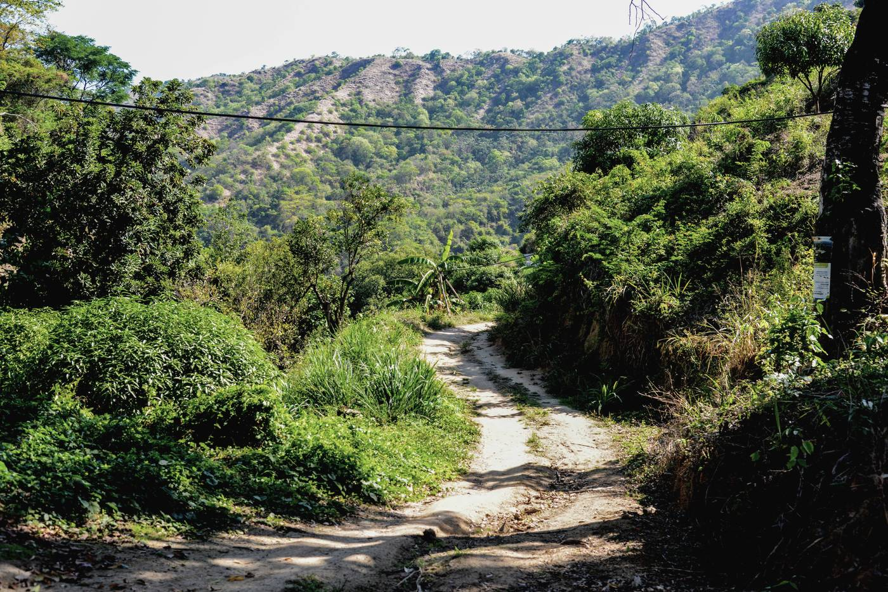

Dentro del panel
- Lotes
- Análisis de suelo por lote y lo anotado en campo.
- Sensores
- Lecturas de la hoja de campo, en un tablero.
- Clima
- Pronóstico con señales de riego, lluvia y viento.
- Laboratorio
- Análisis de suelo, foliares y catación.
- Tareas
- Plan del día y asignaciones de la cuadrilla.
- LIA
- Asistente que lee las lecturas y deja propuestas.
